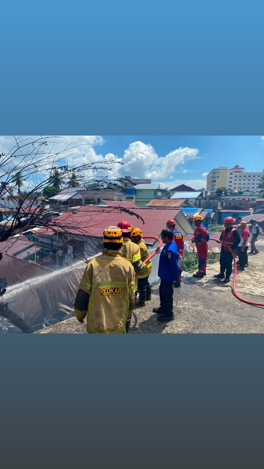
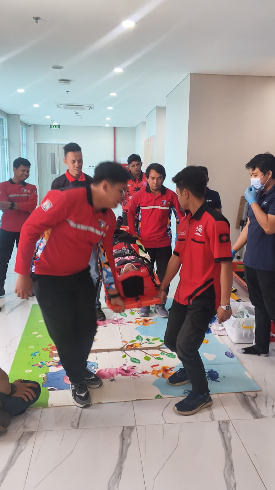

Pemadaman Dini
Respons pertama sebelum armada tiba: APAR, karung basah, dan pengamanan sumber api di tingkat RT.
- Pelaporan titik api & akses jalan
- Pengamanan warga sekitar lokasi
BPBD Kota Balikpapan — No. Arsip REDKAR/2024/BPN
Organisasi sukarelawan resmi yang dibina BPBD Kota Balikpapan. Membantu pemadaman dini, evakuasi, dan edukasi keselamatan dari tingkat RT sampai kecamatan.
Pendaftaran daring → ditinjau operator → status terpantau di dashboard. Tanpa pungutan biaya.
Bidang Tugas — 01
Tiga pekerjaan pokok yang dilatihkan kepada setiap anggota sebelum diterjunkan ke lapangan.
Respons pertama sebelum armada tiba: APAR, karung basah, dan pengamanan sumber api di tingkat RT.
Membantu evakuasi warga, korban kecelakaan, dan kedaruratan non-kebakaran seperti satwa liar.
Sosialisasi rutin ke rumah tangga: instalasi listrik, kompor, dan jalur evakuasi gang sempit.
Alur Pendaftaran — 02
Empat tahap. Semua status bisa dipantau mandiri lewat dashboard akun.
Email, password, dan nomor telepon aktif. Proses kurang dari 3 menit.
Data diperiksa kesekretariatan. Rata-rata verifikasi 1×24 jam.
Anggota terverifikasi mengikuti pembinaan dasar di posko induk.
Ditempatkan di kelurahan domisili sesuai jadwal piket.


Sekilas Redkar — 03
REDKAR dibentuk berdasarkan Kepmendagri No. 364.1-306 Tahun 2020 dan dibina langsung oleh BPBD. Di Balikpapan, relawan menjadi kepanjangan tangan pos Damkar di gang-gang yang sulit dijangkau armada besar.
Rekrutmen terbuka — tanpa biaya
Isi formulir malam ini, verifikasi besok, ikut pembinaan pekan ini. Semua pengumuman tampil di dashboard akun.